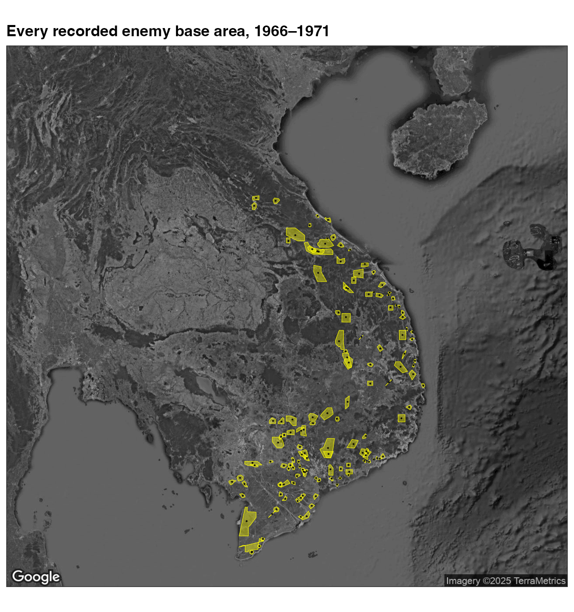
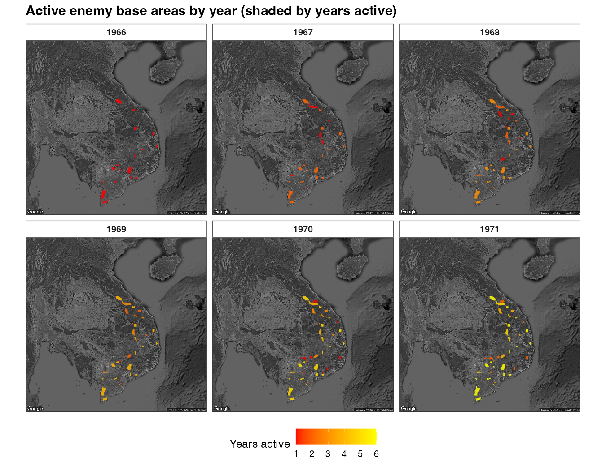

The Base Area Status File (get_basfa()) is the package’s
polygon dataset: it records the boundaries and yearly status of 139 Viet
Cong / NVA base areas in South Vietnam, North Vietnam, and Cambodia
(1966–1971). This article shows how to turn it into sf
polygons and map them over a satellite basemap.
The code chunks are not run at build time (they need the download); the figures are pre-rendered.
Get a key, then cite
ggmap. The satellite basemap comes from the Google Maps Static API; this package does not redistribute Google’s imagery, soget_satellite_map()fetches it with your own key (register it first viaggmap::register_google()). If you use it, cite Kahle, D. & Wickham, H. (2013), “ggmap: Spatial Visualization with ggplot2,” The R Journal 5(1):144–161. Map imagery © Google.
Setup
get_basfa() returns an sf object (POLYGON
geometry), so it works with geom_sf() straight away.
Every recorded base area
Each base area appears once per month it was tracked, so reduce to
one row per base_area_id before mapping. Lay the polygons
over the basemap with geom_sf(inherit.aes = FALSE), and add
each area’s centroid (center_long, center_lat)
as a point.
distinct_bases <- basfa |>
distinct(base_area_id, .keep_all = TRUE)
ggmap(se_asia) +
geom_sf(
data = distinct_bases,
fill = "yellow1", color = "yellow1", alpha = 0.4, linewidth = 0.2,
inherit.aes = FALSE
) +
geom_point(
data = distinct_bases,
aes(center_long, center_lat),
color = "black", size = 0.15, alpha = 0.8, inherit.aes = FALSE
) +
labs(x = NULL, y = NULL)
Active base areas, year by year
current_status flags whether an area was
"Active" in a given year. Here we keep the active areas,
count how many years each has been active, and facet by year — the fill
shows cumulative years active.
active_counts <- basfa |>
st_drop_geometry() |>
distinct(base_area_id, year, current_status) |>
group_by(base_area_id) |>
summarize(
first_active_year = if (any(current_status == "Active")) min(year[current_status == "Active"]) else NA,
last_active_year = if (any(current_status == "Active")) max(year[current_status == "Active"]) else NA,
any_active = any(current_status == "Active"),
.groups = "drop"
) |>
filter(any_active) |>
tidyr::pivot_longer(c(first_active_year, last_active_year), values_to = "year") |>
group_by(base_area_id) |>
tidyr::complete(year = min(year):max(year)) |>
mutate(years_active = cumsum(rep(1, n()))) |>
ungroup() |>
select(base_area_id, year, years_active)
active_sf <- basfa |>
filter(current_status == "Active") |>
distinct(base_area_id, year, .keep_all = TRUE) |>
inner_join(active_counts, by = c("base_area_id", "year"))
ggmap(se_asia) +
geom_sf(data = active_sf, aes(fill = years_active), color = NA,
alpha = 0.85, inherit.aes = FALSE) +
facet_wrap(~ year, nrow = 2) +
scale_fill_gradientn(colors = c("red", "orange", "yellow"), na.value = "grey50") +
labs(fill = "Years active", x = NULL, y = NULL)
Notes
- The polygons carry no CRS (coordinates are plain
longitude/latitude), which is why they align directly with the
ggmapbasemap. -
get_basfa()also includesprovince,vc_military_region, and priority fields you can map or facet on. - For incident (point) mapping over satellite imagery, see the satellite article.